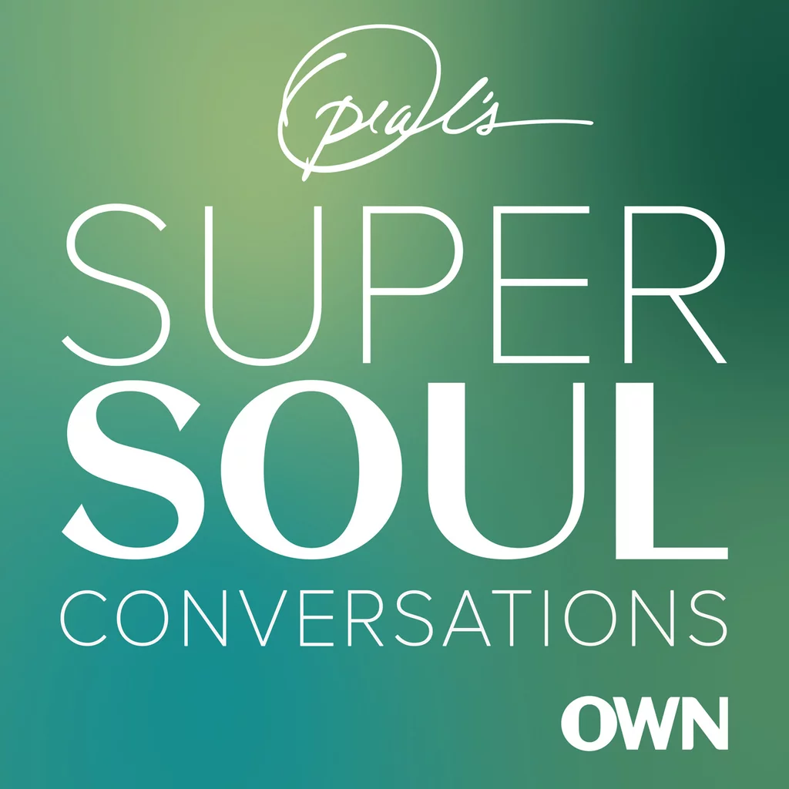

The Anatomy of Trust
- February 16, 2021

I listened to "Oprah Super Soul Conversations:The Anatomy of Trust" from Dr. Brené Brown about 2 years ago and I still remember how strongly that hit me about trust. In that podcast, Dr. Brené Brown laid out crystal clear about trust when I was struggling with trust issues but I didn't know what exactly was wrong. It really helped me to pin point why I felt certain way.
I would like to recite some of those words that she mentioned in the podcast.
- “To choose not to connect when the opportunity is there is a moment of betrayal,”
- “Trust is choosing to make something important to you vulnerable to the actions of someone else.” -Charles Feltman
- "Distrust is what I’ve shared with you that is important to me is not safe with you,” -Charles Feltman
BRAVING (Acronym): "When we trust, we are braving connection with someone."" -Brené Brown
- Boundaries: "There is no trust without boundaries."
- Reliability: "I can only trust you if you do what you say you're going to do" over and over again."
- Accountability: "I can only trust you if when you make a mistake, you're willing to own it, apologize for it and make amends. I can only trust you if when I make a mistake, I am allowed to own it, apologize and make amends."
- Vault: "Holding in confidence."
- Integrity: "Choosing courage over comfort, choosing what's right over what's fun, fast or easy, and practicing your values not just professing your values."
- Non-judgement: "We can fall apart and being in struggle and ask for help without being judged."
- Generosity: "Make a generous assumption and check it out."